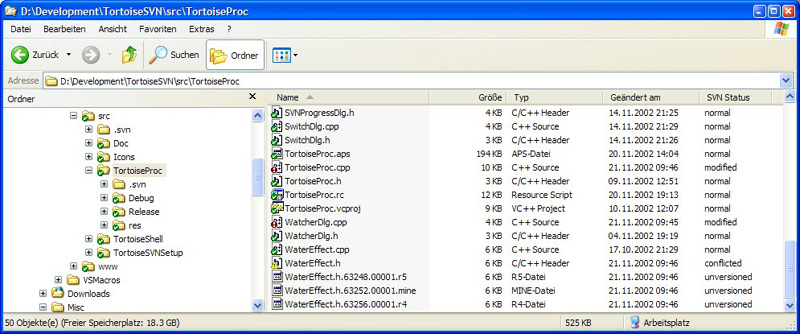

TortoiseSVN is a Subversion client implemented as a windows shell extension.
For more information have a look at the Screenshots and the daily use guide. The impatient among you may download the latest installer from the file sharing area. Please read the FAQ before posting questions to the mailing list.
We also have a Guide on how to install a subversion server with apache.
Please, please, please! If you have any request, ideas for new functions and features or just bug reports then mail them to the dev mailing list before filing an issue. It's annoying to ask further questions via issuezilla. Also read our rules for the list.

26 June 2003 Version 0.12 of TortoiseSVN released! Built against Subversion 0.24.2
grab it from the filesharing area.
21 May 2003 Version 0.11.2 of TortoiseSVN released! Built against Subversion 0.23
grab it from the filesharing area.
since there's still a lot of work to be done we could use some help